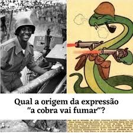
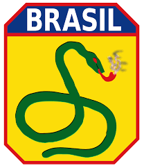

<!--Links de estilização-->
<link href="../../static/css/style.css" rel="stylesheet">
<script src="https://cdn.tailwindcss.com"></script>

<article class="grid h-full rounded-lg">
    <a href="nomepost.html" target="_blank" rel="noopener noreferrer">
        
        <figcaption class="flex flex-col gap-3 p-3">
            <h5 class="flex-grow text-xl font-bold">A cobra Vai Fumar</h5>
            <p class="flex-grow w-full h-56 overflow-y-scroll">
                A expressão “A cobra vai fumar” foi adotada como lema da Força Expedicionária Brasileira (FEB) durante a Segunda Guerra Mundial, como uma provocação aos
                pessimistas que diziam que era mais fácil uma cobra fumar do que o Brasil entrar na guerra, com isso a FEB adotou como símbolo o desenho de uma cobra com um cachimbo na boca, acompanhado da frase “A cobra vai fumar”
            </p>
            <p class="flex-grow"><small class="flex-grow text-gray-600">19 de Setembro de 2024</small></p>
            <div class="flex flex-grow w-full gap-3 px-4 py-2 border rounded shadow-sm full">
                
                <p class="my-auto"><strong>Leonardo De Souza Jose</strong></p>
            </div>
        </figcaption>
    </a>
</article>